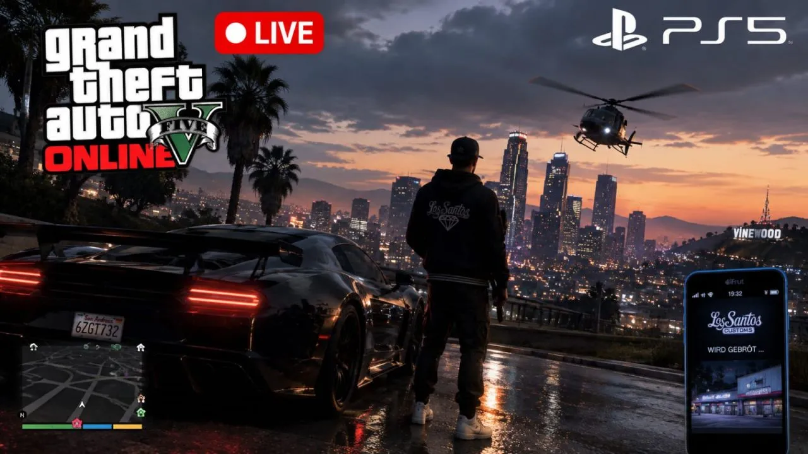

Open GTA 6 Map / Watson Bay
Street Food Vendor
Street food in Watson Bay

Open on the map- Category
- Food, bars and clubs
- District
- Watson Bay
- Game coordinates
- X -4,509, Y -3,699
Nearby
- Los Santos Panic card: Marquise Bernard card-los-santos-panic
- Vice City Manatees card: Anthony Ross Vice City Manatees card
- Jack of Hearts card: Brianna Blue (Deep Red) Jack Of Hearts card
- Timeless Peculiars Smash 'n' Grab
- Guns Aplenty! Ammu-Nation